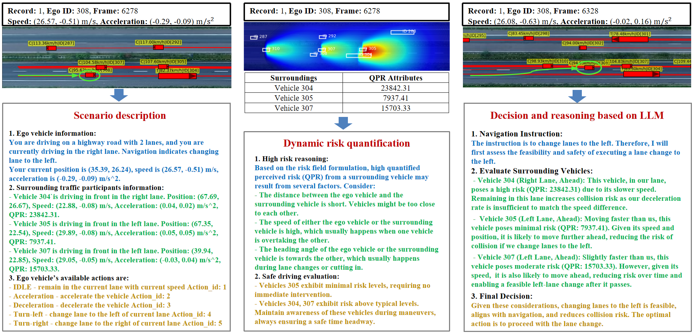

Abstract
SafeDrive is a knowledge- and data-driven decision-making framework designed to enhance the safety and adaptability of autonomous vehicles (AVs) in dynamic, high-risk scenarios. It features four modular components: (1) a Risk Module for quantifying multi-factor risks; (2) a Memory Module for scenario storage and retrieval; (3) an LLM-powered Reasoning Module for context-aware decision-making; and (4) a Reflection Module for iterative decision refinement. Evaluations on real-world traffic datasets (highD, inD, rounD) demonstrate SafeDrive's ability to achieve a 100% safety rate, align with human-like driving behaviors (85%+ decision accuracy), and adapt to unpredictable situations, showcasing its potential for improving AV performance in challenging environments.

HighD Scenario

InD Scenario

RounD Scenario
Overview of the Framework

SafeDrive combines naturalistic driving data with high-risk scenario analysis to enable AVs to make safe, adaptive decisions in complex, uncertain environments. It integrates diverse high-risk scenarios into a comprehensive database, processed by a dynamic risk quantification module using advanced modeling techniques like cost maps and multi-dimensional risk fields. The LLM decision-making module leverages chain-of-thought reasoning and adaptive memory to provide tailored, risk-sensitive decisions in real time. These decisions are embedded into AV systems, enabling real-time risk identification and adaptive warnings. A closed-loop reflection mechanism ensures continuous improvement by refining policies through iterative learning. This approach enhances safety, responsiveness, and adaptability, addressing the challenges of unpredictable, high-risk scenarios.
Sample Reasoning Process

The process starts with scenario description, which outlines the vehicle's state, traffic dynamics, and available actions. Dynamic risk quantification follows, using heatmaps and textual notifications to identify high-risk traffic components. Finally, the reasoning module integrates these inputs to assess lane-change feasibility and determine the optimal driving strategies. By incorporating all relevant environmental details, this streamlined process ensures comprehensive decision-making.